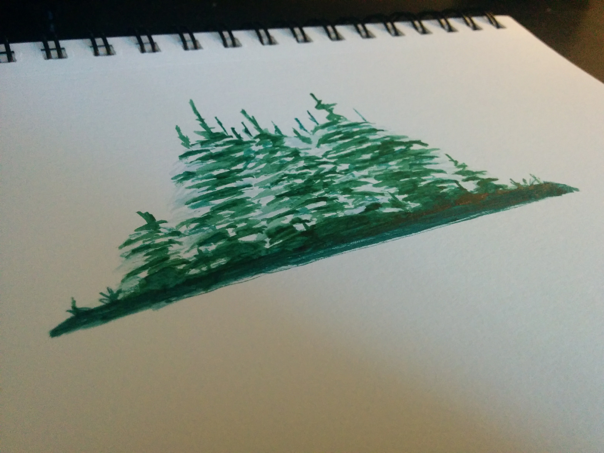
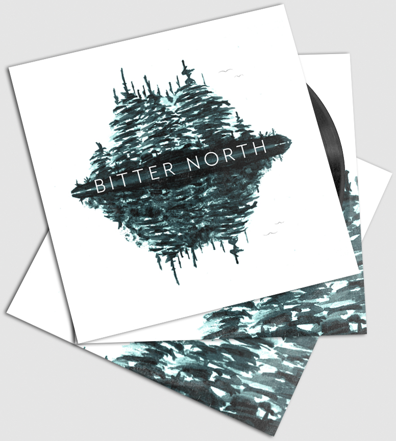

BITTER NORTH
Self Titled EP
Album artwork for a folk/rock band which focuses on the natural beauty of their native Ottawa and embraces the feelings that their name suggests. Musically, it is a mix of classic influences interpreted through modern techniques and this is reflected in the execution of the artwork; a fusion of watercolour painting and digital art.

Initial watercolour painting

Front and reverse covers

Finished pieces